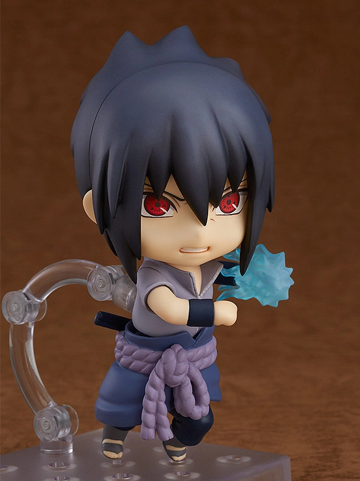
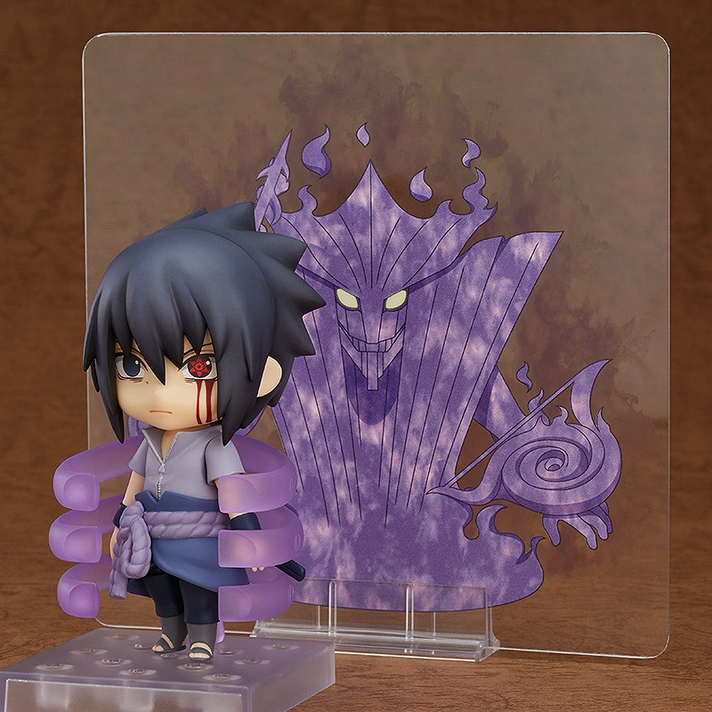

Sasuke is one of the last surviving members of Konohagakure's Uchiha clan. After his older brother, Itachi, slaughtered their clan,
Sasuke made it his mission in life to avenge them by killing Itachi.
He is added to Team 7 upon becoming a ninja and, through competition with his rival and best friend, Naruto Uzumaki


Sasuke's cool and composed appearance from the Shippuden series has been faithfully converted into Nendoroid size and he comes
complete with three face plates including his standard expression, a Sharingan expression as well as a Mangekyou Sharingan expression! Nendoroid Sasuke
also comes with a selection of optional parts including his 'Chidori' ninjutsu parts to contrast with Naruto's Rasengan. A special illustration sheet
featuring Sasuke's Susanoo together with effect parts to complete Sasuke's impressive appearance when he fully awakened his Mangekyou Sharingan are also included!!
In addition, 'Union Sign' hand parts for Sasuke and Naruto are included allowing you
to display the two of them forming the Union Sign that they were never able to complete themselves in the series - recreate the scene that never was in Nendoroid size!.
